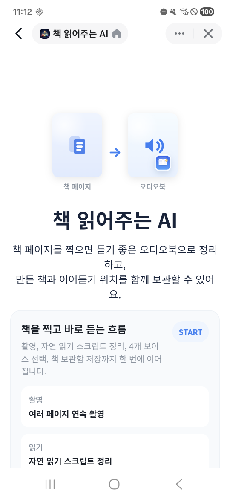

책 읽어주는 AI · 읽던 글을 다시 듣고 싶을 때찍어둔 한 페이지,
찍어둔 한 페이지,
이번에는 귀로.
다시 읽고 싶은 글을 촬영하고, 인식된 문장을 확인한 뒤 한국어 음성으로 들어보세요.
처음이라면 이렇게
직접 쓴 메모 한 페이지로 시작해 보세요. 촬영 후 잘못 읽힌 글자를 고치고 음성을 만들어요.
- 글자가 또렷하게 한 페이지 촬영하기
- 인식된 문장을 확인하고 음성 만들기
- 듣다가 멈추고, 보관함에서 이어 듣기
만든 음성을 재생해 문장이 제대로 들리는지 확인해 주세요. 생성 완료와 실제로 재생되는지는 따로 확인해요.
한 페이지 읽어보기 ↗링크가 열리지 않으면 토스 앱에서 책 읽어주는 AI를 검색해 주세요.
음성 생성에 광고와 대기 시간이 있어요. 직접 작성했거나 이용 권한이 있는 글을 사용해 주세요.
